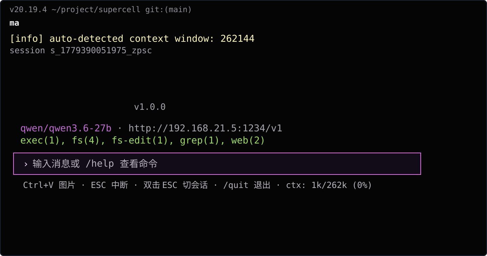
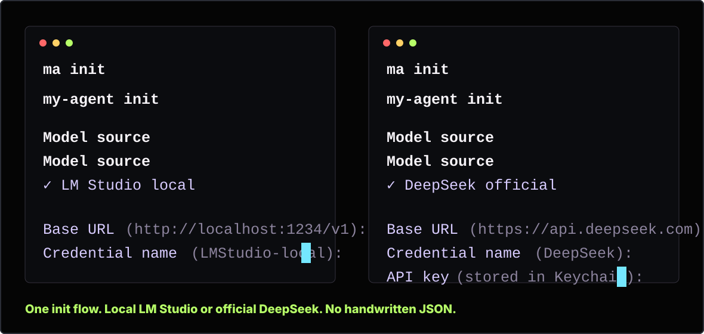

“Do not make me configure this twice.”
ma init gives DeepSeek and LM Studio the same guided path: discover models, store credentials, create profiles, start working.
v0.1.2-alpha · DeepSeek setup + local Qwen productivity
DeepSeek in minutes. Local small models turned into real productivity.
Developers want less setup pain, lower token pressure, and local models that actually finish repo work. MA delivers that: brainless DeepSeek onboarding, LM Studio/Qwen hardening, long-context agent loops, built-in tools, and benchmark evidence.
The Product Is The TUI

First Run Matters
The first screen is deliberately boring in the best way: arrow-key provider choice, sensible defaults, credential names, Keychain storage for remote keys, then model discovery.

What Users Actually Want
ma init gives DeepSeek and LM Studio the same guided path: discover models, store credentials, create profiles, start working.
Local Qwen through LM Studio becomes the default place for repeated repo work, while DeepSeek stays one command away.
Sampling passthrough, tool-call recovery, multimodal payload compatibility, and message integrity tests target Qwen/LM Studio behavior directly.
MA detects context windows, shows usage, compresses output, and is built for long agent loops rather than short chat demos.
Remote keys live in macOS Keychain, with config files storing references instead of plaintext secrets.
The TUI surfaces model, endpoint, tools, task progress, thinking state, session controls, and context budget while work is happening.
Benchmark As Evidence
The benchmark is proof that MA's small-model engineering matters: local Qwen3-30B, LM Studio, tools, long multi-turn repo tasks, 70-task alpha gate. It is not a generic leaderboard. It is evidence for the product promise.
Read benchmark detailsInstall
tar -xzf ma-*.tar.gz
cd ma-*
./ma init
./maExpand-Archive ma-*.zip
cd ma-*
.\ma.cmd init
.\ma.cmd